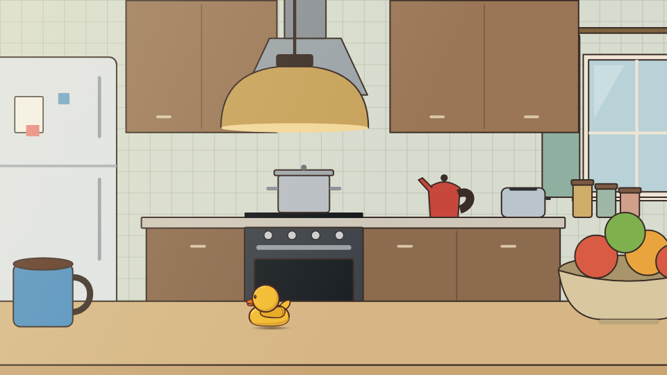
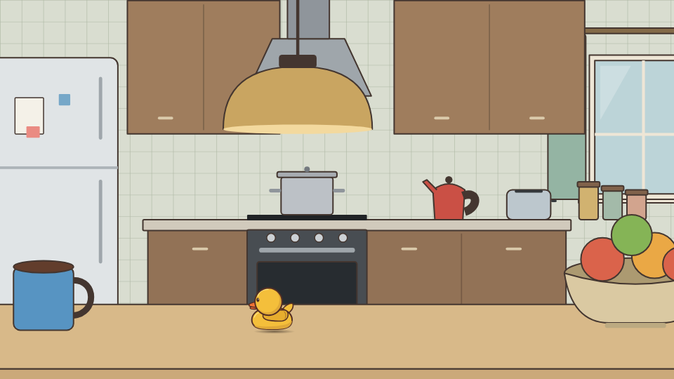
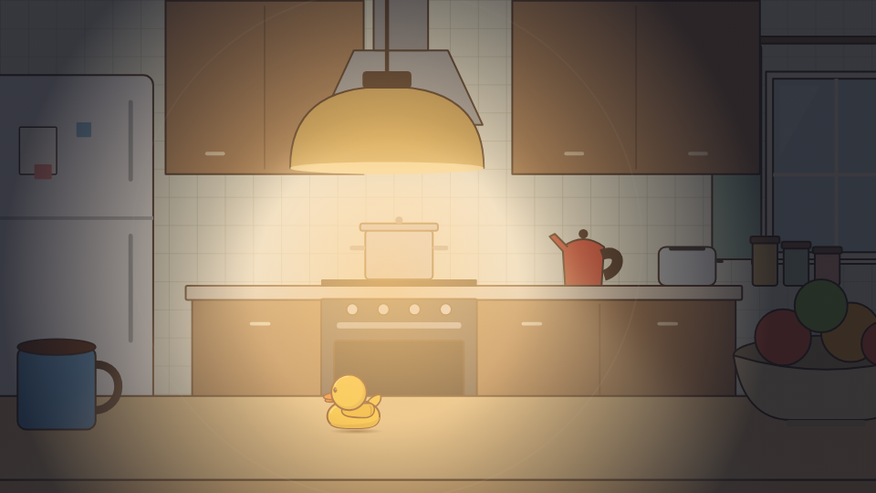

Early Evening kitchen lighting comparison
These are static study images. The middle image is a proposed lighting layer over the existing daytime kitchen; it has not been selected or added to the game.



These are static study images. The middle image is a proposed lighting layer over the existing daytime kitchen; it has not been selected or added to the game.


